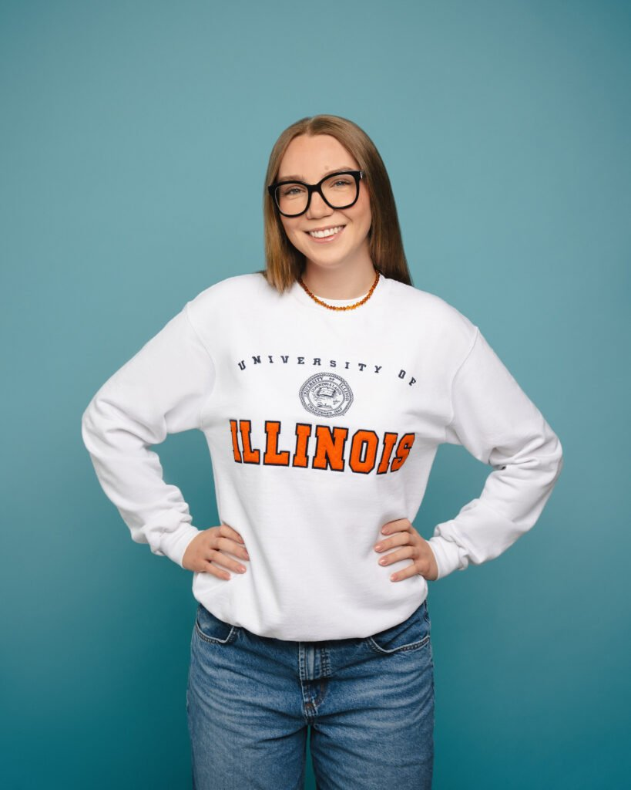
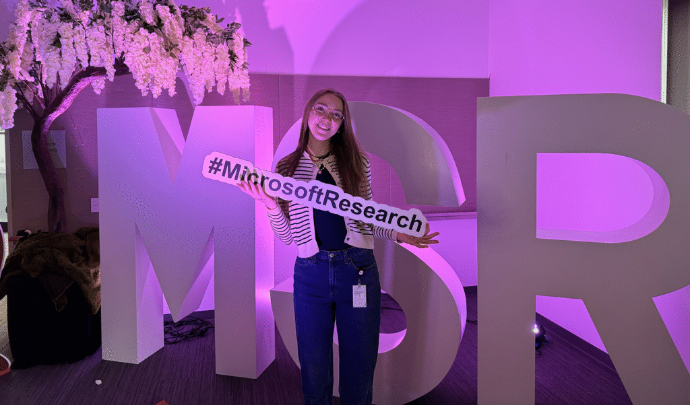
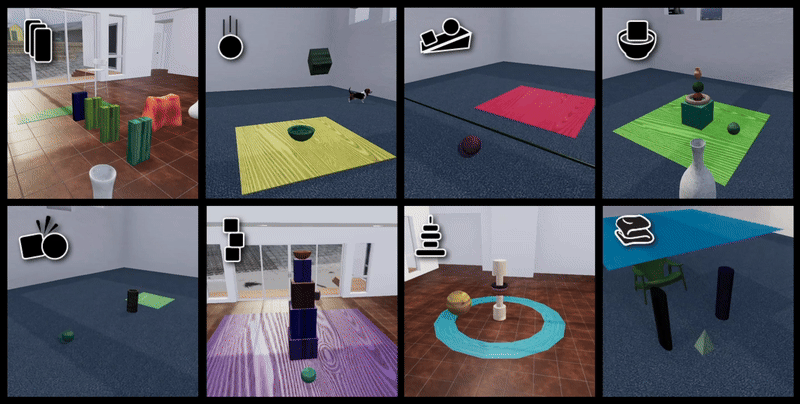
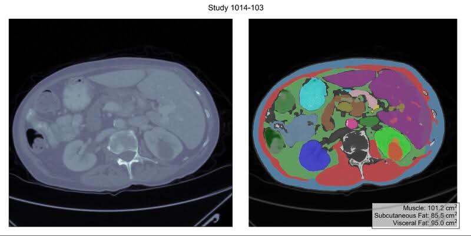
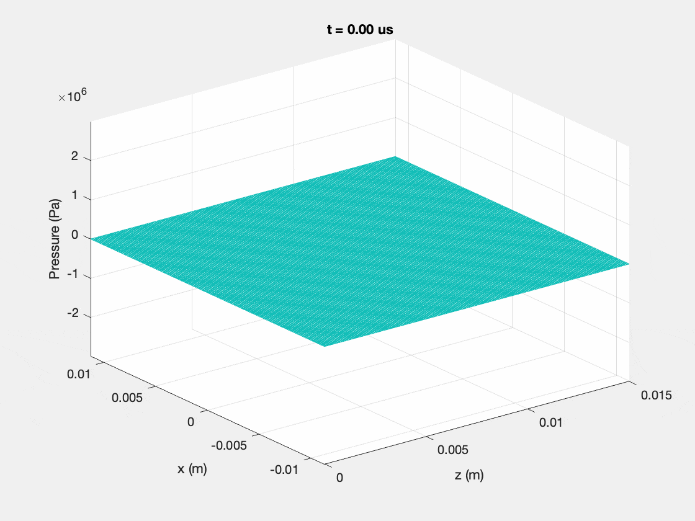
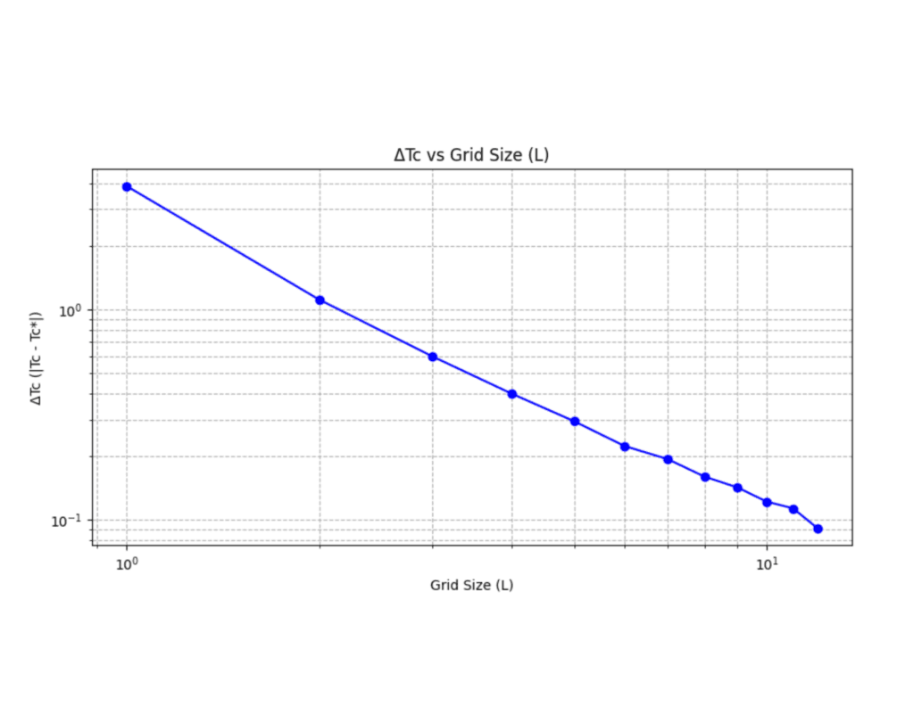
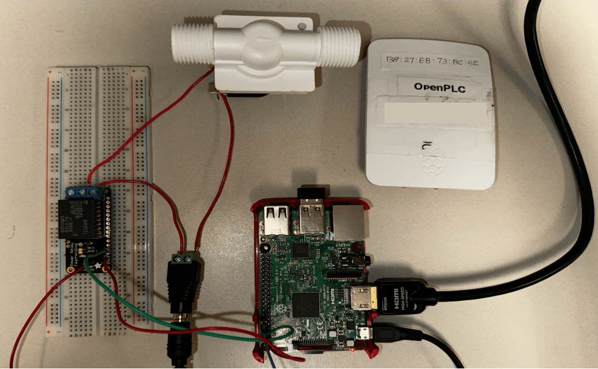
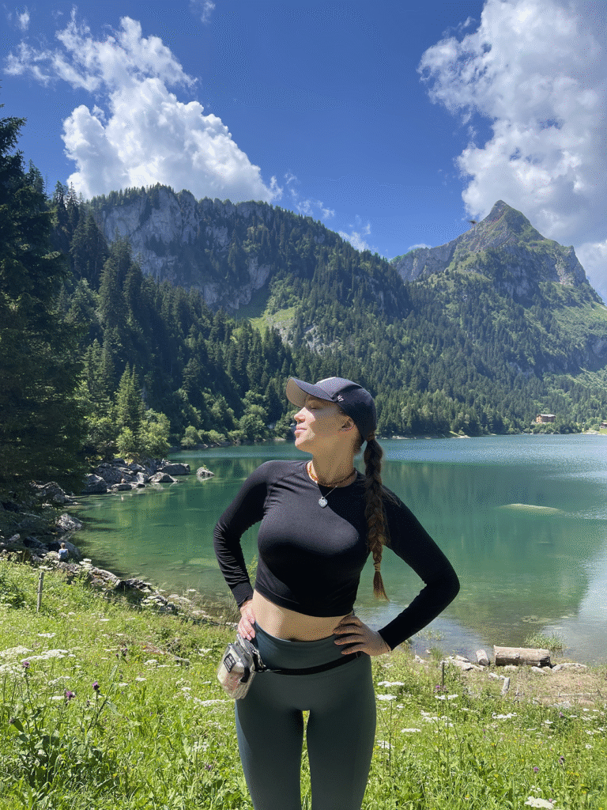
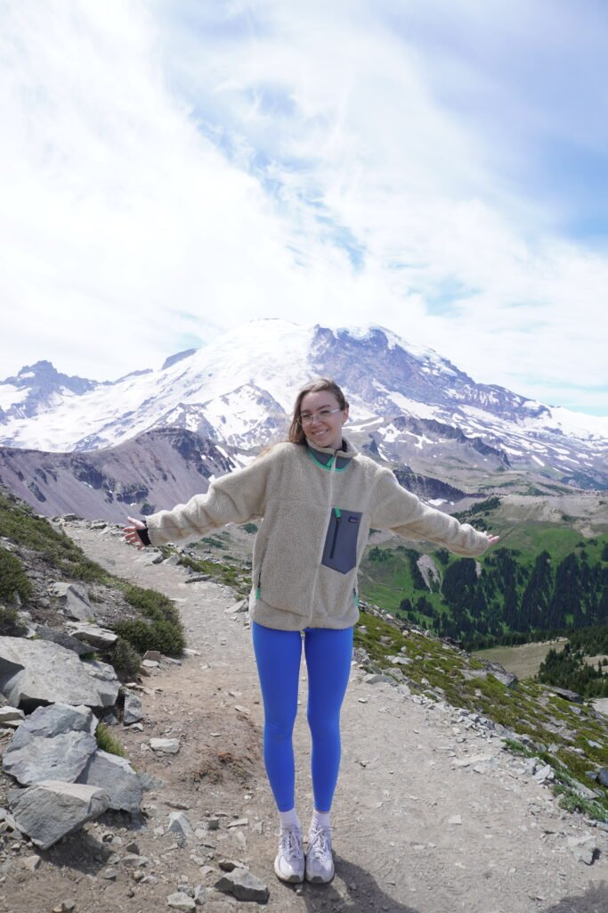

I'm Ieva Bagdonaviciute
Senior in Computer Engineering at the
University of Illinois Urbana-Champaign's
Grainger College of Engineering.

About
I'm a senior majoring in Computer Engineering at the University of Illinois Urbana-Champaign.
My interests lie within:
- AI / ML 🦾
- Multimodal AI 🚀
- Computer Vision 👁️
Education 📖
University of Illinois Urbana-Champaign,
📍 Urbana, IL, USA
- Bachelor’s of Science in Computer Engineering
- GPA: 3.9/4.0
- Dean’s List of Fall 2023, Fall 2024
Vilnius jesuit High School,
📍 Vilnius, Lithuania
- Graduated with an average score of 95/100 from matura exams
- Received Diploma of Honor
Research Intern at Microsoft
Worked under the mentorship of Principal Researcher Vibhav Vineet in the AI Frontiers Lab Evaluation Group
Designed and implemented an end-to-end benchmarking pipeline within the open-source EUREKA framework to evaluate vision-language models (VLMs)
Conducted large-scale evaluations of frontier multimodal models across multiple physics-based simulation datasets
Engineered novel metrics and correlation analyses for model diagnostics
Co-authoring a paper in progress on benchmarking findings and evaluation methodology

Me 🙂

Example simulations from the Physion dataset, illustrating object interactions in physical reasoning tasks [Physion, Bear et al., 2021]
Research Assistant for prof. Yoram Besler (UIUC)
Conducted ultrasound imaging simulations using FOCUS and k-Wave software, modeling pressure wave propagation in homogeneous and heterogeneous media to study tissue interaction effects
Applied segmentation pipelines by integrating AbdomenAtlas with a body-composition repository, generating full abdominal maps including both organ and fat segmentation
Developed parameter maps of ultrasound and Electrical impedance tomography (EIT) properties using Python, enabling accurate forward problem simulations of wave propagation

Joint ATLAS and Fat Segmentation computer vision frameworks for abdomen organ and fat segmentation

Time-domain simulation of the transient pressure field generated by a rectangular piston using the Nearfield Method
ML Research Intern at The Swiss Federal Institute of Technology (EPFL)
Developed Monte Carlo Markov Chain simulations and differentiable Metropolis-Hastings algorithm in Python and JAX to study and optimize the Ising model
Conducted thermalization and sampling processes to measure energy, magnetization, and acceptance rates, analyzing the impact of temperature on these properties and investigated phase transitions
Collaborated with interdisciplinary teams to apply classical machine learning techniques in physical simulations and materials science, enhancing modeling accuracy and insights.
Developed and presented a research poster at the Undergrafuate Research Symposium Fall 2024

Logarithmic plot of the difference between critical temperature and converged value versus grid size, obtained using the Score method across increasing grid sizes
Research Assistant at the Coordinated Science Laboratory at UIUC
Engineered and conducted experiments utilizing the OpenPLC framework on embedded platforms for industrial software evaluation
Analyzed and quantified performance overhead, documenting metrics including CPU, memory, and I/O utilization
Validated the feasibility of deploying OpenPLC on commodity hardware such as Raspberry Pis and Arduinos to assess industrial software
Developed and presented a research poster at the Undergrafuate Research Symposium Spring 2024

Water valve setup that is controller by PLC
ECE120 (Introduction to Computing) Course Grader at the University of Illinois at Urbana-Champaign
Grading 15+ students’ analytical homework on weekly basis in areas including but not limited to C programming, combinational and sequential logic analysis and design, finite state machines, and the von Neumann model
Providing constructive feedback to students to foster their critical thinking and academic integritydetecting fat deposits around internal organs (ongoing)
Embedded Software Engineering Intern at Teltonika Telematics
Operated with STM32CubeIDE software to configure a functional STM32F413 microcontroller on the FMB640 hardware platform, adhering to Telematics coding style
Developed software layers using CMSIS-RTOS API v2 and STM32 low layer library, encompassing drivers (GPIO and UART), APIs (UART, command, debug, LED, and heap), and application (CLI) tailored for the tracker's optimal performance in reading messages and performing the given commands
Conducted and delivered weekly research presentations on topics such as UART, RS-485, MQTT, I2C, I2S, CRC, Ethernet and more, showcasing strong analytical and communication skills
Projects 🛠
TikTok virality predictor
Developed a machine learning model to predict TikTok video virality by analyzing engagement metrics like comments, shares, likes, and duration using linear regression, and random forest algorithms
Implemented data visualizations and feature importance analysis using Matplotlib and seaborn to identify key factors driving video view counts, improving insights into social media engagement patterns
Handwritten Digits Recognizer
Developed a digit recognition model using the MNIST dataset with Keras and TensorFlow
Implemented a deep learning architecture with multiple hidden layers, Dropout for regularization, and ReLU activations to enhance performance.
Trained the model on normalized data and achieved high accuracy in digit classification.
Utilized key techniques in computer vision for preprocessing and model evaluation.
Smart light-seeking Solar Panel
Collaborated with a team of 20+ members of the Women in Electrical and Computer Engineering on the Engineering Open House 2024 project to develop a smart light-seeking solar panel that turns to the side providing most watts of power
Relevant Coursework, Certifications, and Achievements 🚀
University coursework:
- Computer Systems Engineering
- Computer Vision
- Artificial Intelligence
- Data Structures
- Probability with Engineering
Applications - Digital Signal Processing
- Digital Systems Laboratory
- Quantum Computing
Qualifications
IBM: Data Science Course Certificate
Code-Academy:: Full Stack Programming Level 1 Certificate
AI4ALL - College Pathways: Al/ML Application In Industry Course Certificate
Columbia University: "Thinking and Problem Solving: Math in the Real World" 2-week Program Certification
Honors and Achievements:
Illinois Engineering Achievement Scholar: Awarded for academic excellence to top engineering students at the University of Illinois Urbana-Champaign
Global Research Scholar: Recognized for exceptional talent in engineering with research experience abroad
Kazickas Family Foundation Scholar: One of only 6 recipients in Lithuania, awarded for academic and leadership excellence in STEM
Free time: when Ieva decides to touch some grass 🌿
🎤 I’ve been singing for over 12 years - from local concerts to stepping onto the X-Factor stage. Music has always been my creative outlet.


🥾 When I’m not tuning neural nets, I’m usually out tuning into nature. From lakeside strolls to mountain ridges, hiking keeps me grounded and gives me an excuse for way too many scenic photos.